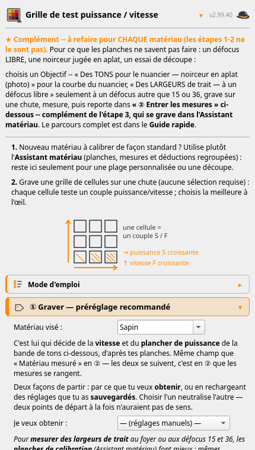
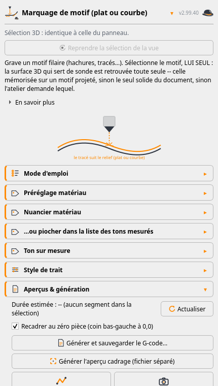
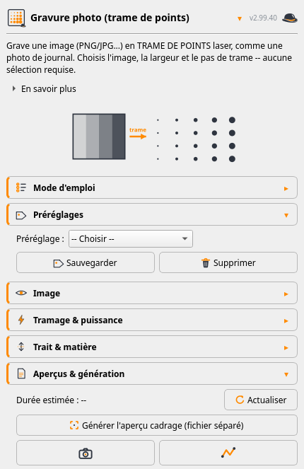
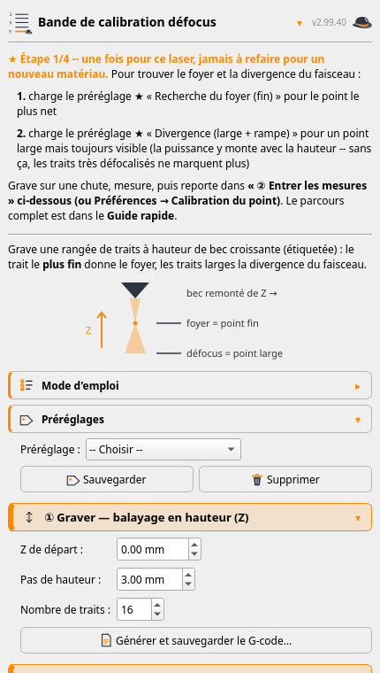
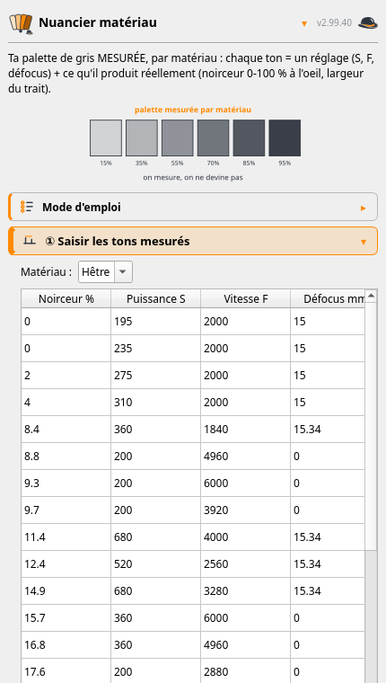
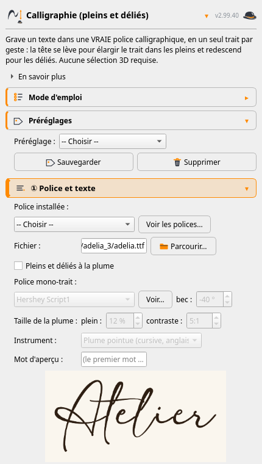

Cliquer n'importe où, ou Échap, pour fermer
Un atelier FreeCAD qui transforme de la géométrie en G-code laser. Sa raison d'être tient en une phrase : suivre une surface courbe sans perdre le foyer.
Marquage, gravure remplie, photo tramée, découpe multi-passes, projection sur surface 3D, grilles de test et planches de calibration. Le détail de chaque mode est sur le site de l'atelier — cette page-ci raconte plutôt pourquoi il est fait comme ça.
Vingt-deux panneaux, un par mode. En voici six — cliquer pour agrandir.






Quatre ajouts de l'été disent assez bien la ligne de conduite. L'atelier lit les
limites de la machine dans son propre .ini LinuxCNC au lieu de les
demander : ce que la machine sait déjà, on ne le retape pas. L'assistance d'air se
commande en M8/M9, d'après un fichier qui a réellement
gravé et non d'après une documentation. Les projets LightBurn s'importent par
la même icône que les SVG, pour n'avoir pas à choisir son camp. Et une machine
sans axe Z — un graveur de table — est désormais un cas prévu, plus un cas
qui plante.
Un audit ajouté au passage rattrape le pire genre de défaut : une face invalide gravait blanc, en silence. Une erreur qui se voit vaut mieux qu'une planche vierge découverte à la fin.
Elles sortent du dépôt LaserAtelier, où un script les régénère toutes en une commande. Il passe par le harnais des tests : la configuration est redirigée vers une copie jetable, si bien que capturer ne peut pas écrire dans les mesures au pied à coulisse accumulées sur l'établi.
Une particularité de la machine commande toute la génération du G-code, et elle n'est écrite nulle part dans les manuels de laser.
Sur cette PrintNC, la couche HAL met la puissance du laser à l'échelle du rapport entre vitesse réelle et vitesse demandée — c'est ce qui évite de brûler dans les angles, où la machine ralentit. Conséquence directe : à l'arrêt, la puissance est forcée à zéro.
Un point obtenu par une temporisation — la façon naturelle de faire un pointillé — ne grave donc rien du tout, et le travail sort silencieusement blanc. Chaque marque ponctuelle est un micro-trait : un court déplacement dont la vitesse reproduit le temps d'exposition voulu.
S entre deux G1 arrête la machine
Toujours sous LinuxCNC, changer la puissance par le mot S entre deux
mouvements force un arrêt : 76 ms par bloc contre 22,5, mesurés. Sur un
tramage modulé, où la puissance change à chaque trait, cela saccade tout le travail
et le rallonge d'un facteur trois. La puissance voyage donc par
M67 E0 Q<v>, une sortie synchronisée avec le mouvement.
Sans effet en GRBL, qui ignore M67 et n'a pas le problème.
Les défauts les plus coûteux de ce projet n'ont jamais été trouvés par un test ni par une relecture de code. Ils ont été trouvés en regardant une planche — ou en écoutant la tête bouger.
Une planche de nuancier a montré six tons notés « 100 % de noirceur » — dont un qui ne gravait rien du tout. La courbe calibrée rendait la même recette pour toutes les noirceurs demandées, en silence. Un nuancier bien rempli n'est pas une preuve que la chaîne fonctionne.
Un dégradé qui aurait dû aller du clair au foncé est sorti uniformément noir : la chaîne photo était fausse d'un bout à l'autre. Et la mire censée la valider portait le même défaut — elle ne pouvait donc pas le détecter.
Quatre bandes à énergie identique mais à quatre vitesses différentes ont donné quatre noirceurs différentes. La noirceur ne dépend donc pas que de l'énergie, mais aussi du temps de séjour — ce qu'aucune correction de formule ne pouvait rattraper.
Deux fois, c'est le bruit de la tête qui a trahi des déplacements inutiles dans les tramages à points — la seconde fois un mois entier après le « correctif ». Aucun test ne regardait cette propriété-là.
« Cette plage est plus foncée que celle-là alors qu'elle devrait être plus claire » est une mesure, et elle tranche. Quand une hypothèse et le bois ne sont pas d'accord, c'est le bois qui a raison — et mieux vaut demander une petite planche de contrôle que théoriser : trois mécanismes faux ont été proposés en un après-midi avant qu'une gravure ne tranche.
La partie technique, repliée : à dérouler seulement si le sujet intéresse.
Pour noircir une surface en un seul passage, le remplissage éloigne le bec du foyer : le point s'élargit et des hachures espacées se recouvrent. Le modèle est un cône de divergence linéaire calibré à partir de deux mesures réelles du point — au foyer, puis à un défocus connu. Une bande de calibration les fournit ; on les saisit une fois, et tous les modes concernés les réutilisent.
Défocaliser étale la même puissance sur un point plus large : l'énergie par unité de surface baisse, et sous un seuil le trait ne marque plus.
Les modes concernés demandent donc un réglage de référence connu bon sur le matériau, et compensent la puissance pour retrouver la même fluence à la largeur de point et à la vitesse courantes.
La sonde de hauteur Z faisait à l'origine une intersection géométrique OpenCascade par point sondé, environ 5 ms chacune. Sur un remplissage dense, cela fait des dizaines de milliers d'intersections et plusieurs minutes d'attente.
Elle repose maintenant sur une tessellation unique de la surface, suivie d'une interpolation barycentrique par point. On paie une fois un petit coût de préparation — le maillage — pour rendre ensuite chaque requête quasi gratuite, au lieu de payer le prix fort à chacune des dizaines de milliers de requêtes.
| Calcul | avant | après | gain |
|---|---|---|---|
| Projection du motif sur la surface 3D | 66,2 s | 0,06 s | ×1200 |
| G-code marquage courbe (1er calcul) | 107,0 s | 0,18 s | ×600 |
| G-code marquage courbe (recalcul) | 11,8 s | 0,18 s | ×65 |
| Hachures 0,2 mm sur 24 faces à trou | 2,6 s | 0,08 s | ×33 |
| Grille de test 6×6, hachures 0,2 mm | 1,1 s | 0,06 s | ×17 |
L'écart Z entre le maillage et la vraie surface est borné à 0,05 mm, et validé contre l'ancien calcul exact sur 300 points au hasard : erreur maximale mesurée 0,046 mm. Négligeable devant la tolérance de foyer du laser, de l'ordre du dixième.
Le module est un LT-80W-AA-PRO, diode 10 W optiques. La pièce carrée qui entourait son nez a été retirée : sans elle, la tête peut plonger vers une surface courbe sans heurter la pièce. C'est cette modification matérielle qui rend possibles les modes sur surface 3D.
Le contrôle anti-collision ne modélise donc que le cône restant :
| Dimension | valeur |
|---|---|
| Diamètre à la pointe (point le plus bas) | 5 mm |
| Diamètre au sommet du cône | 16 mm |
| Hauteur du cône | 18 mm |
Ces trois cotes viennent de ce module. Sur un bec de géométrie différente, le contrôle sous-estimerait ou surestimerait les collisions. Le profil s'édite depuis les préférences de l'atelier, sans toucher au code — mais il doit être adapté avant d'utiliser les modes sur surface courbe.
LaserAtelier est le seul de ces logiciels à avoir déjà son site complet. Cette page ne le remplace pas : elle raconte ce qu'il ne raconte pas.
Version 2.99.50 au moment où cette page a été engendrée — lue dans
laser_core.py, jamais recopiée à la main.